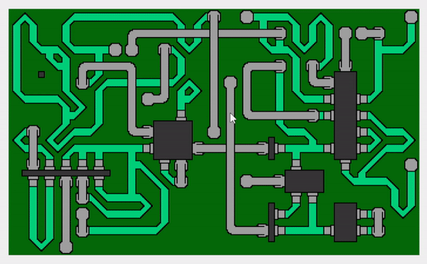
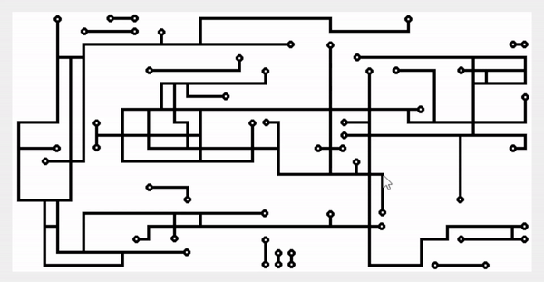
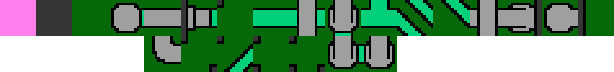
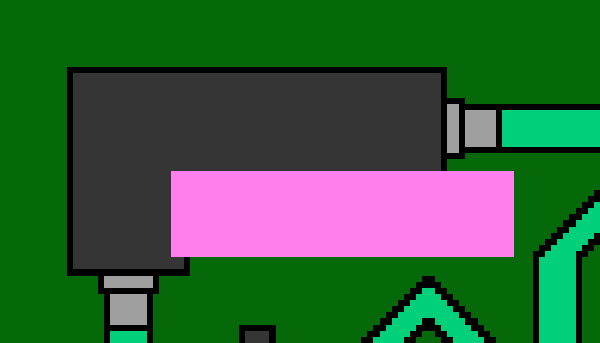

Wave Function Collapse
1. Introduction
In my previous article, I described a Wave Function Collapse (WFC from now on) inspired project where I explored the basic idea of randomness with restrictions, now it’s time for the real thing. In this article I’ll show the method I ended up with. In case you haven’t read the previous article, or if you read it a long time ago, I would suggest checking it first, as this project is a direct continuation of it and many parts are the same.

What a spoiler, that was the final result! So let’s take a big step back and take things in order, beginning where we left off in the previous post.
2. Flexible Tiles
First, I wanted to make the tileset (graphics) more compact and reduced it to one of each type (compare with previous post), so I implemented a method to rotate a tile and all its properties. Remember for later that this tileset can never fail to fill the board, but this is the new tileset:
Previously we had a simple Boolean value to describe if a side had a connection or not, but if there are more connection points the system will be open for more advanced tiles. I decided to have three connections per side, same as in the WFC project I was inspired by, but there are still only two types in my project: Blank and Road.
public enum Edge { Blank, Road }
…
public Edge[] Up { get; set; }
public Edge[] Down { get; set; }
public Edge[] Left { get; set; }
public Edge[] Right { get; set; }The class had to be updated to use an array of connections per side and was also upgraded with fields for Entropy and its state – if it’s Collapsed or not. Let me show an example of adding a tile, let’s use the 90 degree turn from the tileset above. The order of adding sides is: up, down, left, right. Going from left to right and top to bottom.
tiles.Add(new Tile(inputBitmap.Clone(new Rectangle(2 * tileSize, 0 * tileSize, tileSize, tileSize), format), 1,
Edge.Blank, Edge.Road, Edge.Blank,
Edge.Blank, Edge.Blank, Edge.Blank,
Edge.Blank, Edge.Road, Edge.Blank,
Edge.Blank, Edge.Blank, Edge.Blank));
tmpTile = new Tile(tiles.Last());
tiles.Add(tmpTile.Rotate(1));
tmpTile = new Tile(tiles.Last());
tiles.Add(tmpTile.Rotate(1));
tmpTile = new Tile(tiles.Last());
tiles.Add(tmpTile.Rotate(1));This will add the “turn 90 degrees tile”, set up (three) connections for all directions and finally the remaining three rotated versions of this tile. The ‘1’ in Rotate(1) means that the tile with all its properties will be rotated 90 degrees one time clockwise. Some tiles (like the straight connection only require one more variant, rotated 90 degrees) and some don’t need rotation at all (such as 4-way crossing or blank tiles). After going through the smaller tileset we now have a “library” equal to the old, but are prepared for more connection types.
As before, I decided to treat tiles outside the board as not connected, or “Blank”. Now I can compare the edges to each other in the same way as before. Note that I’m still placing tiles in order "top to bottom, left to right" (the final version comes further down):
Edge[] BoardEdge = { Edge.Blank, Edge.Blank, Edge.Blank };
Edge[] connectionAbove = new Edge[3];
if (y == 0) // Top row, use Edge.Board
connectionAbove = BoardEdge;
else // Not at top row, set connectionAbove to above's Tile.Down
connectionAbove = field[y - 1, x].Down;
if (x == 0) // Leftmost column
connectionLeft = BoardEdge;
else // Not at leftmost column, change connectionLeft to the left tile's Tile.Right
connectionLeft = field[y, x - 1].Right;
List<Tile> possibleTiles = new List<Tile>();
possibleTiles = (from connections in tiles
where connections.Up.SequenceEqual(connectionAbove)
where connections.Left.SequenceEqual(connectionLeft)
select connections).ToList();After creating a selection of tiles, I used the same weighting method as described in my previous post on this subject and the resulting board is ended up exactly the same as before (which is what we wanted to see), so with the new connection method working it was time to implement the collapse function. It will start the fill process in the mouse click position and then check all directions to calculate the new Entropy for the surrounding tiles before deciding where to place next tile.
3. Algorithm Breakdown
I kept the same wording as was used in the project that inspired me, but instead of Entropy I could as well have called it Possibilities or something like that. This value is used when deciding which position is next to be evaluated. The flow looks like this after selecting a position:
- Create a tile selection consisting of all tiles in our library.
- Check in each direction, if a tile in one of those Positions is Collapsed (has a placed tile) we need to reduce the selection and keep only the ones with matching sides.
- If there are no matching tiles, we’ll place a “failed tile” and move on. This will not happen with the current tileset, but later on we will run into impossible patterns, as demonstrated in the gif in the beginning of this post.
- For all matching tiles, randomize which tile to place using the weight system covered in the previous post and place it in the field (and mark the Position as collapsed).
- Now check in all directions from the placed tile, any tile that is not collapsed will need its Entropy re-calculated. It is calculated in the same way as in steps 1-2 and the number of matching tiles is stored as a number.
- All non-collapsed Positions are added to a List of Positions to evaluate, unless already in the List of course.
- From the List of all Positions to evaulate, the one with the lowest Entropy is selected to be the next Position to evaluate and we’ll start all over with number 1 again until we have filled the entire field. If there are several Positions with same Entropy the one with lowest index (placed in the List first) will be next.

This method should make sure that Positions with the lowest Entropy (has fewest possible, fitting tiles) are dealt with first. I’ll show a few key code blocks to explain how I implemented the steps.
workingTiles = new List<Position>();
Position nextPos = new Position(x, y);
workingTiles.Add(nextPos);
while (nextPos != null) // we return null if workingTiles.Count == 0
{
nextPos = NextTileInEntropyOrder(nextPos);
}When starting the algorithm, the workingTiles List will contain only one Position. In the first loop, up to four new Positions will be added to the List. Remember that we will only add new Positions that are not already Collapsed, and of course not Positions that are out of bounds. The function NextTileInEntropyOrder(Position nextPos) will return the next Position to evaluate until the entire board has been filled, in which case it returns null and ends the while-loop.
The method to reduce the selection of possible tiles to use is similar what we used before, but now we check in all four directions every time. The example below shows the first steps and checking the tile above.
Edge[] BoardEdge = new Edge[] { Edge.Blank, Edge.Blank, Edge.Blank };
List<Tile> possibleTiles = new List<Tile>(tiles);
int x = currentPos.X;
int y = currentPos.Y;
if (y == 0)
{
possibleTiles = (from connections in possibleTiles
where connections.Up.SequenceEqual(BoardEdge)
select connections).ToList();
}
else if (field[y - 1, x].Collapsed == true)
{
possibleTiles = (from connections in possibleTiles
where connections.Up.SequenceEqual(field[y - 1, x].Down)
select connections).ToList();
}To be able to compare width board edges (if we’re on the top row, meaning y is 0) we use the BoardEdge, otherwise we compare with above tile (if it has been placed, which means that Collapsed is true). The result is used to remove non-matching tiles from the List of possible tiles to place. This procedure is repeated for every direction and in the end, we might have a handful of matching tiles to choose from (otherwise we will place the “failed” tile). After this, we mark the Position as Collapsed, draw it, and calculate Entropy for all non-collapsed tiles in all four directions. Showing the initial steps and first direction below:
field[y, x].Collapsed = true;
workingTiles.Remove(currentPos); // We have added current position to the field, remove it from workingTiles
if (y != 0 && field[y - 1, x].Collapsed == false) // Add above tile if it's not outside field or already Collapsed
{
Position newPos = new Position(x, y - 1);
if (workingTiles.Contains(newPos) == false)
workingTiles.Add(newPos);
UpdateEntropy(x, y - 1);
}The UpdateEntropy(int x, int y) looks almost identical to how we make a tile selection, so I won’t show a code example from that function. So: we are checking the tiles in all four directions, and calculate that tile's Entropy by checking in all four directions from that tile. But not for Collapsed tiles, of course.
The key in this algorithm, except for placing matching tiles, is to select the next tile based on the Entropy value so we will look through the list of Positions to work with and select the one with lowest Entropy. This means that the Positions with fewest possible matching tiles will be evaluated first.
if (workingTiles.Count > 0) //Check Entropy for all tiles in workingTiles and return the one with lowest
{
int lowestEntropyIndex = 999999;
int lowestEntropy = 999999;
for (int i = 0; i < workingTiles.Count; i++)
{
int tmpEntropy = field[workingTiles[i].Y, workingTiles[i].X].Entropy;
if (tmpEntropy < lowestEntropy)
{
lowestEntropy = tmpEntropy;
lowestEntropyIndex = i;
}
}
return new Position(workingTiles[lowestEntropyIndex].X,
workingTiles[lowestEntropyIndex].Y);
}
return null; // This will happen when the last tile has been placed and workingTiles is emptyAnd with that piece of code we are pretty much done! But the tileset we have used up until now is not very exciting, it’s time to take the project to the next level and use a more interesting tileset.
4. New Graphics
I will use the same one that was used in the project I was inspired by. I added a few more though, partly to make it more “complete” but also because I kept running into impossible pattern combinations and in turn had problems finishing a full, large sized board.

This is some form of made-up circuit board with four different surface/connection types, and the new enumeration looks like this:
public enum Edge { Board, Chip, Bridge, Trace }The first tile, in pink, is only used if no matching tile is found – the so-called “Failed Positions”, after that it’s pretty straight-forward: Dark green is the board, light green is a trace, the gray traces are some kind of wire/bridge and the dark gray is a chip. And when declaring them I do the same as before – define all connections for each side. On the first row, all tiles are used, but not all on second, I added a bunch more but not all of them helped in the task of finding solutions – some even made it worse. Here are two examples, a trace connecting to a chip and then a bridge over a trace (they have index 5 and 8 on the first row):
tiles.Add(new Tile(inputBitmap.Clone(new Rectangle(5 * tileSize, 0 * tileSize, tileSize, tileSize), format), 3,
Edge.Chip, Edge.Board, Edge.Board,
Edge.Chip, Edge.Board, Edge.Board,
Edge.Chip, Edge.Chip, Edge.Chip,
Edge.Board, Edge.Trace, Edge.Board)); // Chip side with trace connector
tmpTile = new Tile(tiles.Last());
tiles.Add(tmpTile.Rotate(1));
tmpTile = new Tile(tiles.Last());
tiles.Add(tmpTile.Rotate(1));
tmpTile = new Tile(tiles.Last());
tiles.Add(tmpTile.Rotate(1));tiles.Add(new Tile(inputBitmap.Clone(new Rectangle(8 * tileSize, 0 * tileSize, tileSize, tileSize), format), 1,
Edge.Board, Edge.Bridge, Edge.Board,
Edge.Board, Edge.Bridge, Edge.Board,
Edge.Board, Edge.Trace, Edge.Board,
Edge.Board, Edge.Trace, Edge.Board)); // Trace/Bridge crossing
tmpTile = new Tile(tiles.Last());
tiles.Add(tmpTile.Rotate(1));Note that the first tile is added with three additional rotations, and the other only needed one rotation (as a second rotation would be identical to the first). When changing tileset I had to update a few lines of code, but not many. Size of tile (in pixels) is larger and since I updated the Enumeration with connection types I had to redefine what a blank side should be (instead of 3x Edge.Blank they will now be 3x Edge.Board). And I should mention that in case the failed/error tile has been placed it will have the connection Edge.Board in all directions to make it easier to fill the rest of the board.

As mentioned before, this tileset will not always find a solution, and this scenario can be handled in various ways. I added a flag which is set in case a “failed” tile has been placed. Then it’s easy to loop until a solution is found. If using a loop, you shouldn’t use a seed as next try would give exactly the same result. In the gif in the beginning I actually used a fixed seed.
5. Ending Words
With all this functionality I actually felt satisfied with this project, now you can look at the gif at the top and hopefully understand what’s going on! There are of course many more things to try, it would for example be really fun to create randomized maps or cities! Those would have to come with more rules, and probably also backtracking in case of impossible solutions. I guess we’ll see if I explore those topics in the future.